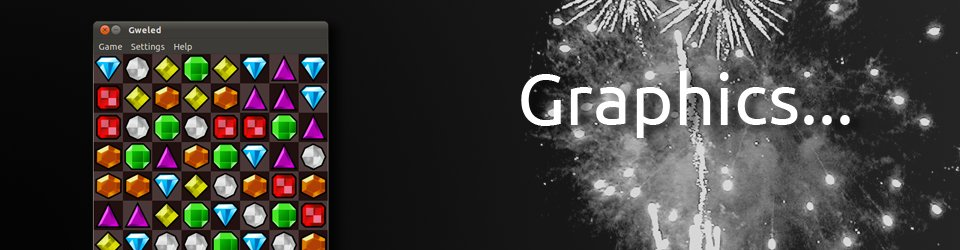

- 

Ubuntu
On Ubuntu Gweled can be installed using the Ubuntu Software Center.
For the latest release there is an Ubuntu PPA for Gweled, currently with binaries for 10.10 "Maverick", 11.04 "Natty" and 11.10 "Oneric".
sudo add-apt-repository ppa:dnax88/gweled
sudo apt-get update
sudo apt-get install gweled
Fedora
To install Gweled on Fedora you can use yum:
yum install gweled
openSUSE
Gweled is already included on recent openSUSE releases.
1-Click install (for openSUSE 11.4)
Debian

Debian users can install Gweled with apt:
aptitude install gweled
Arch Linux
If you using Arch Linux Gweled is on extra repository:
pacman -S gweled
From source

Latest release tarball:
gweled-0.9.1.tar.gz
If you'd like to see exactly what's going on, you can clone Gweled from bzr:
bzr branch lp:gweled